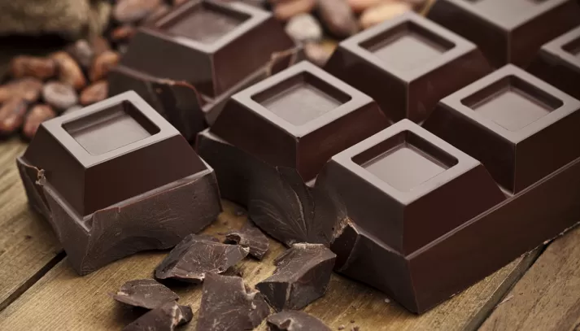
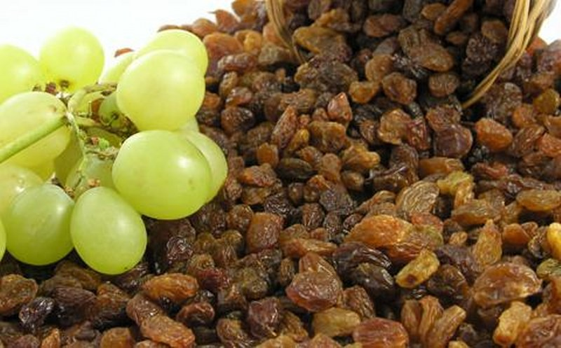
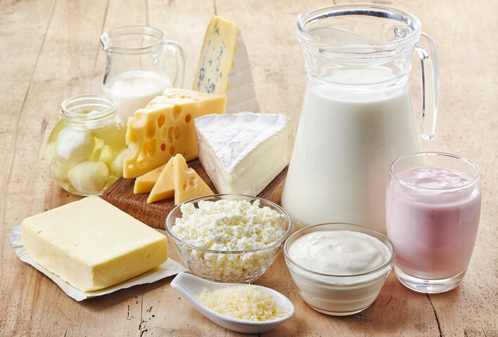
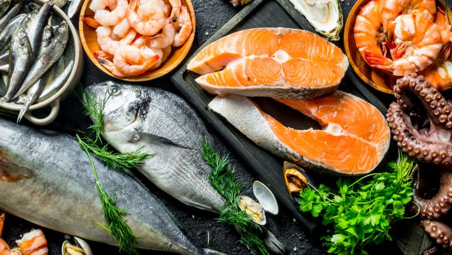
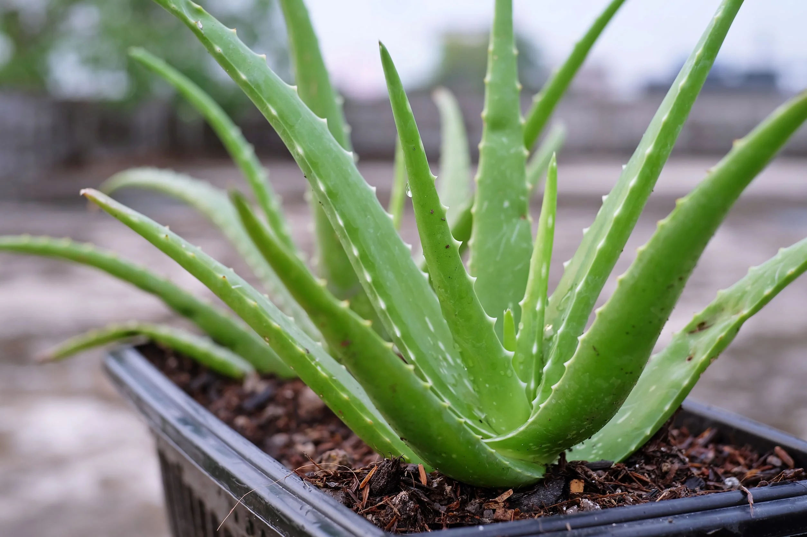
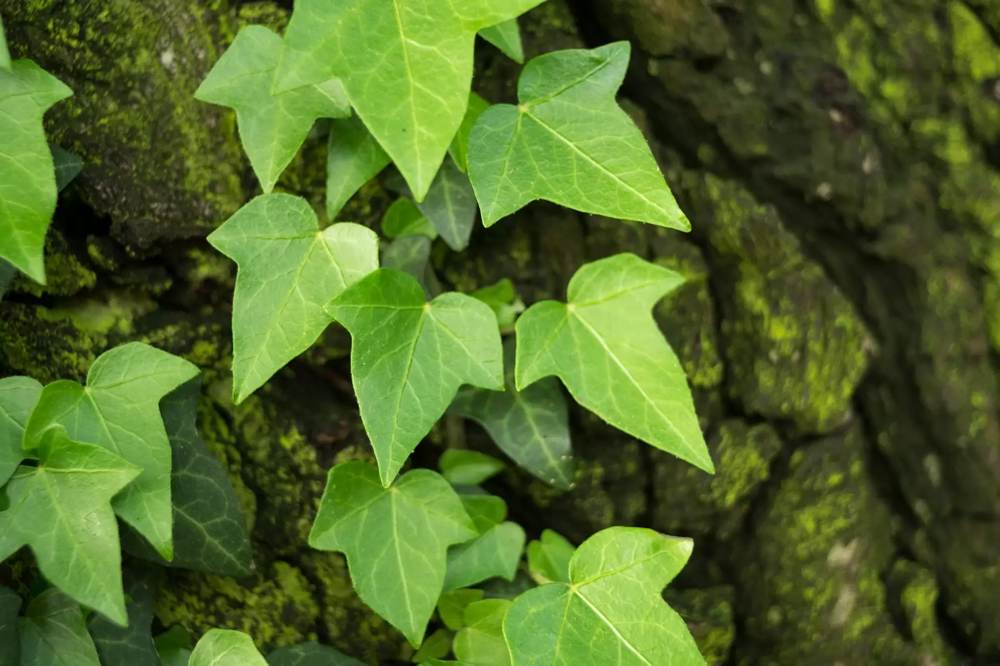
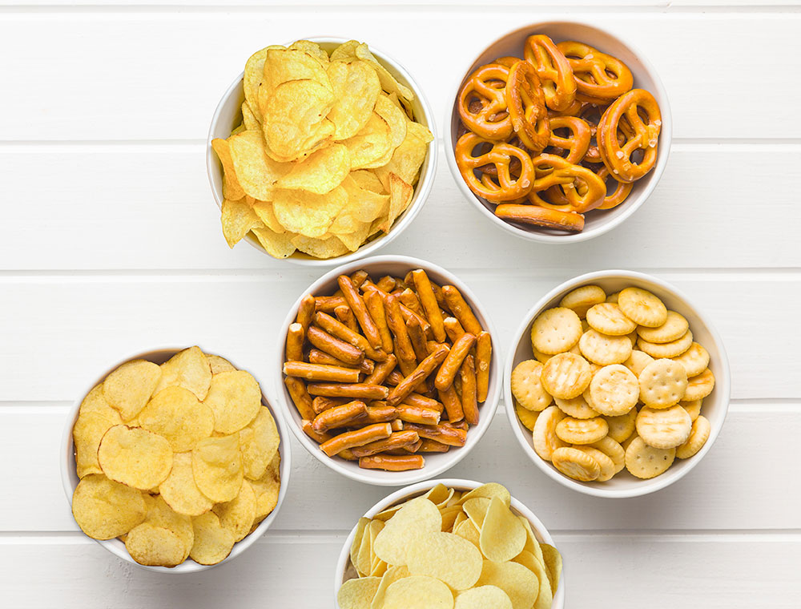
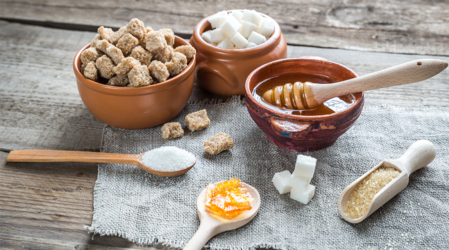

Cosa i gatti non possono assolutamente mangiare
Quando si tratta della salute dei nostri amati gatti, è fondamentale sapere quali alimenti possono essere pericolosi per loro. Anche se i gatti sono noti per la loro curiosità e il desiderio di esplorare, alcuni cibi comuni nelle nostre case possono essere estremamente dannosi, se non addirittura fatali, per loro. Ecco una guida dettagliata su cosa i gatti non possono assolutamente mangiare.
Cibi Tossici per i Gatti
Cioccolato
Il cioccolato contiene teobromina e caffeina, due composti che possono essere altamente tossici per i gatti. Anche una piccola quantità può causare sintomi come vomito, diarrea, tremori muscolari, aumento della frequenza cardiaca e persino convulsioni. È importante tenere il cioccolato fuori dalla portata dei gatti e prestare attenzione a qualsiasi prodotto che possa contenerlo.
Cipolle e Aglio

Cipolle, aglio e altri membri della famiglia delle Allium possono causare danni ai globuli rossi nei gatti, portando a una condizione chiamata anemia emolitica. I sintomi includono debolezza, letargia, perdita di appetito e urine scure. Anche piccole quantità, se consumate regolarmente, possono essere pericolose.
Uva e Uvetta
L'uva e l'uvetta possono causare insufficienza renale acuta nei gatti. I sintomi iniziali includono vomito, diarrea e letargia, seguiti da una ridotta produzione di urina e dolore addominale. Anche una piccola quantità può essere fatale, quindi è meglio evitare di dare questi frutti ai gatti.
Alcool

L'alcool è estremamente tossico per i gatti e può causare avvelenamento anche in piccole dosi. I sintomi includono vomito, diarrea, difficoltà respiratorie, disorientamento e, nei casi più gravi, coma o morte. Tenere sempre alcolici e alimenti contenenti alcool lontano dai gatti.
Alimenti Che Possono Causare Problemi Digestivi
Latte e Prodotti Lattiero-Caseari
Contrariamente alla credenza popolare, molti gatti sono intolleranti al lattosio, lo zucchero presente nel latte e nei prodotti lattiero-caseari. Consumare latte può causare problemi digestivi come diarrea e dolori addominali. Se volete offrire un trattamento speciale al vostro gatto, è meglio scegliere prodotti specificamente formulati per i gatti.
Cibi Grassi e Fritti
Gli alimenti ricchi di grassi e fritti possono causare pancreatite nei gatti, una condizione dolorosa e potenzialmente pericolosa. Sintomi di pancreatite includono vomito, dolori addominali, perdita di appetito e letargia. Evitate di dare ai gatti resti di cibo umano che siano fritti o ricchi di grassi.
Ossa e Lische di Pesce
Le ossa di pollo e le lische di pesce possono causare soffocamento, perforazioni intestinali e blocchi digestivi nei gatti. Anche se può sembrare naturale offrire ossa al gatto, è meglio evitare e optare per alternative più sicure e specificamente formulate per loro.
Piante Tossiche per i Gatti
Gigli
I gigli sono estremamente tossici per i gatti e possono causare insufficienza renale acuta anche in piccole quantità. Tutte le parti della pianta, compresi i petali, le foglie, il polline e persino l'acqua del vaso, possono essere pericolose. Se sospettate che il vostro gatto abbia ingerito parte di un giglio, cercate immediatamente assistenza veterinaria.
Aloe Vera
L'Aloe Vera è una pianta popolare per le sue proprietà medicinali negli esseri umani, ma è tossica per i gatti. Ingerire aloe può causare vomito, diarrea, tremori e cambiamenti nel colore delle urine. Tenete le piante di Aloe fuori dalla portata dei vostri gatti.
Edera
L'edera è un'altra pianta comune che può essere tossica per i gatti. Ingerire edera può causare vomito, difficoltà respiratorie e irritazione della bocca e della gola. Assicuratevi di identificare e rimuovere qualsiasi pianta di edera accessibile ai vostri gatti.
Alimenti con Alti Livelli di Sodio e Zucchero
Snack Salati
Gli snack salati come patatine, pretzel e popcorn possono causare avvelenamento da sodio nei gatti. I sintomi includono vomito, diarrea, letargia, tremori e convulsioni. Evitate di dare al vostro gatto cibi umani salati e optate per snack appositamente formulati per i gatti.
Dolci e Prodotti Zuccherati
I dolci e i prodotti zuccherati, specialmente quelli contenenti xilitolo, sono estremamente pericolosi per i gatti. Lo xilitolo può causare un rapido rilascio di insulina nei gatti, portando a ipoglicemia (basso livello di zucchero nel sangue), convulsioni e insufficienza epatica. Evitate di dare dolci ai vostri gatti e scegliete invece snack salutari e sicuri per loro.
Cibi con Additivi Artificiali
Conservanti e Coloranti
Molti cibi trasformati contengono conservanti e coloranti artificiali che possono essere dannosi per i gatti. Questi additivi possono causare reazioni allergiche, problemi digestivi e, a lungo termine, problemi di salute più gravi. Optate sempre per alimenti naturali e di alta qualità senza additivi artificiali per i vostri gatti.
Dolcificanti Artificiali
I dolcificanti artificiali come l'aspartame possono essere dannosi per i gatti. Sebbene non tutti i dolcificanti siano tossici, è meglio evitare di esporre i gatti a questi prodotti. In caso di dubbio, consultate sempre il vostro veterinario prima di introdurre nuovi alimenti nella dieta del vostro gatto.
In conclusione, la consapevolezza di ciò che i gatti non possono assolutamente mangiare è essenziale per garantire la loro salute e benessere. Mantenere una dieta sicura e nutriente per i nostri amici felini aiuta a prevenire gravi problemi di salute e assicura una vita lunga e felice.